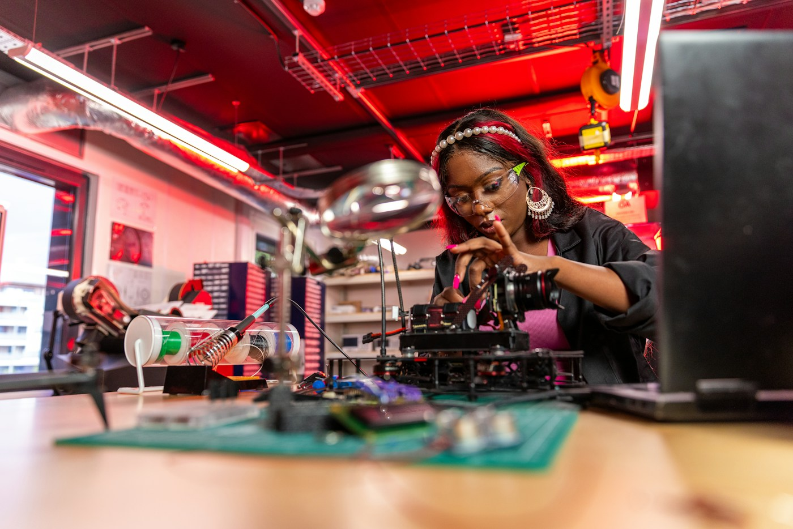

⌘EY / 01
Məktəblər, kurslar və tədris mərkəzləri üçün
STEAM və robototexnika laboratoriyalarının qurulması
Məkandan avadanlığa, tədris proqramından müəllim hazırlığına qədər laboratoriya həlli.
Xidmətə daxildir
- Ehtiyac və məkanın qiymətləndirilməsi
- Robot dəstləri, elektronika və 3D avadanlıq seçimi
- İş zonalarının və avadanlıq yerləşiminin planlaşdırılması
- Quraşdırma, ilkin yoxlama və istifadəyə giriş təlimi